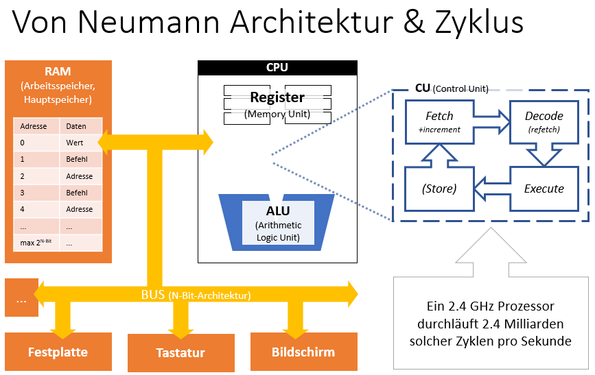

Dein Smartphone, ein Taschenrechner, die Spielkonsole, der Bordcomputer im Auto und der schnellste Supercomputer der Welt haben eines gemeinsam: Sie folgen alle demselben Bauplan. Dieser Bauplan ist über 75 Jahre alt und stammt aus einer Zeit, in der ein Computer noch einen ganzen Saal füllte. Er heißt Von-Neumann-Architektur, benannt nach dem ungarisch-amerikanischen Mathematiker John von Neumann, der ihn 1945 aufschrieb.
Auf dieser Seite lernst du, aus welchen Bauteilen jeder Computer besteht, wie ein Prozessor Schritt für Schritt ein Programm abarbeitet und warum du am Ende selbst den Prozessor spielen kannst.
Die ersten elektronischen Rechner der 1940er Jahre waren fest verdrahtet. Der amerikanische ENIAC zum Beispiel berechnete Flugbahnen von Artilleriegeschossen. Wollte man ihn für eine andere Aufgabe nutzen, musste ein Team tagelang Kabel umstecken und Schalter neu einstellen. Das Programm steckte buchstäblich in der Verkabelung.
Von Neumanns Idee: Das Programm wird nicht mehr verdrahtet, sondern gespeichert, und zwar im selben Speicher wie die Daten, als Folge von Zahlen. Ein neues Programm zu laden, dauert dann Sekunden statt Tage. Aus einer Spezialmaschine wird eine Universalmaschine. Genau deshalb kannst du heute auf ein und demselben Gerät spielen, chatten, rechnen und Filme schauen, ohne dass jemand daran herumlötet.
Die Idee war so gut, dass sie bis heute nicht ersetzt wurde. Jeder Prozessor, den du je benutzt hast, ist im Kern ein Von-Neumann-Rechner.
Ein Von-Neumann-Rechner besteht aus fünf Teilen. Stell dir zur Orientierung eine Person vor, die in einem Büro Rechenaufträge abarbeitet:
Rechenwerk und Steuerwerk zusammen bilden die Zentraleinheit (Central Processing Unit, CPU), also den Chip, den man umgangssprachlich „Prozessor“ nennt.
Hier stand eine Abbildung, deren Nutzungsrechte für die Webseite nicht geklärt sind.
Ein Prozessor kann nur eine Sache: immer wieder dieselben vier Schritte ausführen. Er tut das allerdings mehrere Milliarden Mal pro Sekunde. Dieser Kreislauf heißt Von-Neumann-Zyklus oder Fetch-Decode-Execute-Zyklus:

Um den Zyklus wirklich zu verstehen, bauen wir uns einen absichtlich winzigen Rechner. Er hat 32 Speicherzellen (Adressen 0 bis 31), jede Zelle ist 8 Bit breit. Im Prozessor gibt es ein einziges Rechenregister, den Akkumulator (kurz Akku), und den Befehlszähler. Jeder Befehl ist genau ein Byte: Die ersten 3 Bit sind der Opcode (welche Operation), die restlichen 5 Bit die Adresse (welche Speicherzelle).
| Opcode (3 Bit) | Assembler | Bedeutung |
|---|---|---|
| 000 | HLT | Halt. Der Prozessor stoppt. |
| 001 | LOAD a | Kopiere den Inhalt von Speicherzelle a in den Akku. |
| 010 | STORE a | Kopiere den Akku in Speicherzelle a. |
| 011 | ADD a | Addiere den Inhalt von Zelle a zum Akku. |
| 100 | SUB a | Subtrahiere den Inhalt von Zelle a vom Akku. |
| 101 | JMP a | Springe: Der nächste Befehl steht in Zelle a. |
| 110 | JZ a | Springe zu Zelle a, aber nur wenn der Akku 0 ist. Sonst weiter wie gewohnt. |
| 111 | OUT | Gib den Inhalt des Akkus aus (Adressbits werden ignoriert). |
Schau dir Zelle 10 an: Dort steht 00000111. Wir haben gesagt, das sei die Zahl 7. Aber laut Befehlstabelle ist 000 00111 auch ein gültiger Befehl, nämlich HLT (die Adressbits werden bei HLT ignoriert). Und Zelle 1 mit 01101011 ist der Befehl ADD 11, aber genauso gut die Zahl 107.
Am Bitmuster selbst ist nicht erkennbar, ob es ein Befehl oder eine Zahl ist. Es kommt nur darauf an, ob der Befehlszähler gerade auf diese Zelle zeigt. Das kennst du schon von der Seite 1.4: Ein Byte ist Zahl, Zeichen oder Befehl, je nachdem, wie man es liest.
Diese Eigenschaft macht den Rechner so flexibel (ein Programm ist einfach Daten, die man laden kann), sie ist aber auch eine der wichtigsten Sicherheitslücken der Informatik. Angreifer versuchen, eigene Daten in den Speicher zu schmuggeln und den Befehlszähler dorthin zu lenken, sodass der Prozessor ihre Daten als Befehle ausführt (Stichwort Pufferüberlauf). Moderne Prozessoren und Betriebssysteme markieren deshalb Speicherbereiche als „nur Daten, nicht ausführbar“.
Der Mini-Rechner zeigt, wie mühsam Programmieren direkt in Bitmustern wäre. Deshalb gibt es mehrere Sprachebenen:
LOAD 10. Ein Übersetzungsprogramm, ebenfalls Assembler genannt, wandelt jede Zeile eins zu eins in Maschinensprache um. Assembler wird heute noch dort geschrieben, wo es auf jeden Takt ankommt, zum Beispiel in Treibern, in Teilen von Betriebssystemen oder in Spiele-Engines.summe = a + b wird von einem Compiler oder Interpreter in viele Maschinenbefehle übersetzt. Der Vorteil: Derselbe Python-Code läuft auf einem Intel-Laptop, einem Apple-Chip und einem Raspberry Pi, obwohl alle drei völlig verschiedene Maschinensprachen haben.Ein Game-Boy-Spiel von 1990 liegt als Maschinensprache für den damaligen Prozessor vor. Dein Smartphone hat einen völlig anderen Prozessor. Trotzdem lassen sich solche Spiele mit einem Emulator spielen: Der Emulator ist ein Programm, das den Von-Neumann-Zyklus des alten Prozessors nachspielt, so wie du es in Aufgabe 4.1.2 von Hand gemacht hast, nur ein paar Millionen Mal pro Sekunde. Er holt einen alten Befehl, entschlüsselt ihn und führt ihn mit den Mitteln des neuen Prozessors aus. Derselbe Trick steckt in vielen Retro-Konsolen und hinter der Kompatibilitätsschicht, mit der Apple beim Wechsel auf eigene Chips alte Mac-Programme weiterlaufen ließ.
In der Werbung liest man „3,4 GHz“, „8 Kerne“ oder „16 Threads“. Was steckt dahinter?
Die Architektur hat eine eingebaute Schwachstelle: Alle Befehle und alle Daten müssen durch denselben Bus zwischen Prozessor und Speicher. Der Prozessor kann in einem Takt eine Addition ausführen, aber ein Zugriff auf den Arbeitsspeicher dauert je nach System 100 bis 300 Takte. Der schnellste Prozessor verbringt also die meiste Zeit mit Warten. Man nennt das den Von-Neumann-Flaschenhals.
Stell dir eine Köchin vor, die pro Sekunde einen Handgriff schafft. Was sie gerade braucht, liegt auf der Arbeitsfläche neben dem Herd – sofort greifbar. Für alles andere muss sie zum Kühlschrank auf der anderen Seite der Küche, für Vorräte in den Keller (fünf Minuten hin, fünf Minuten zurück), und was gar nicht im Haus ist, muss sie im Supermarkt holen. Egal wie schnell sie schneidet: Wenn sie ständig laufen muss, wird das Essen nicht schneller fertig. Die Lösung ist, die gerade benötigten Zutaten vorher auf die Arbeitsfläche zu legen. Im Computer entspricht die Arbeitsfläche den Registern und dem Cache, der Kühlschrank dem Arbeitsspeicher, der Keller der SSD oder Festplatte und der Supermarkt dem Internet (→ Tabelle unten).
Kleine, sehr schnelle Speicher direkt im Prozessor halten Kopien der Daten und Befehle bereit, die zuletzt gebraucht wurden. Meist gibt es mehrere Stufen (L1, L2, L3), von winzig und blitzschnell bis größer und langsamer. Ein gutes Programm nutzt Daten, die nahe beieinander liegen, damit sie möglichst oft schon im Cache sind.
Der Prozessor wartet nicht, bis ein Befehl komplett durch alle vier Schritte ist. Während Befehl 1 ausgeführt wird, wird Befehl 2 schon entschlüsselt und Befehl 3 geholt, wie am Fließband. So ist in jedem Takt jede Stufe beschäftigt.
Wenn ein Befehlsstrom auf den Speicher wartet, wird ein anderer bearbeitet. Siehe oben.
Der Flaschenhals ist auch der Grund, warum KI-Modelle heute meist nicht auf klassischen Prozessoren, sondern auf Grafikprozessoren trainiert werden. Eine GPU hat statt weniger schneller Kerne tausende einfache Rechenwerke, die dieselbe Operation gleichzeitig auf riesige Datenmengen anwenden. Genau das braucht man beim Training neuronaler Netze, bei der Bildbearbeitung und beim Rendern von Spielen. Mehr dazu im Wikipedia-Artikel „Graphics processing unit“.
Dieser Trend hat einen realen Energiepreis: Laut der Internationalen Energieagentur (IEA) verbrauchten Rechenzentren 2024 weltweit rund 415 Terawattstunden Strom (etwa 1,5 % des globalen Stromverbrauchs). Bis 2030 wird durch den KI-Boom eine Verdopplung erwartet.
Schon in den 1940er-Jahren gab es einen zweiten Bauplan. Der Rechner Mark I an der Harvard University hatte getrennte Speicher für Befehle und für Daten – jeder mit einem eigenen Bus. Der Prozessor kann deshalb im selben Takt den nächsten Befehl holen und Daten lesen oder schreiben. Der Von-Neumann-Flaschenhals wird so entschärft.
Ein Computer hat nicht einen Speicher, sondern eine ganze Treppe von Speichern. Ganz oben stehen die winzigen, schnellen und teuren, ganz unten die riesigen, langsamen und billigen. Wie groß die Geschwindigkeitsunterschiede sind, kann man sich kaum vorstellen. Deshalb hier ein Trick: Wir tun so, als würde ein Prozessortakt bei 3 GHz nicht 0,33 Nanosekunden dauern, sondern eine Sekunde. Dann ergeben sich folgende Wartezeiten aus Sicht des Prozessors (Größenordnungen, je nach Gerät unterschiedlich):
| Speicher | echte Zugriffszeit (ca.) | Takte bei 3 GHz | in „Menschenzeit“ (1 Takt = 1 s) | typische Größe |
|---|---|---|---|---|
| Register im Prozessor | 0,3 ns | 1 | 1 Sekunde | wenige Byte |
| L1-Cache | 1 ns | ca. 4 | 4 Sekunden | einige 10 KB |
| L3-Cache | 10 ns | ca. 30 | eine halbe Minute | einige 10 MB |
| Arbeitsspeicher (RAM) | 100 ns | ca. 300 | 5 Minuten | 8 bis 64 GB |
| SSD | 100 µs | ca. 300.000 | 3,5 Tage | 0,5 bis 4 TB |
| Festplatte (HDD) | 10 ms | ca. 30 Millionen | knapp 1 Jahr | 2 bis 20 TB |
| Server im Internet (Antwortzeit) | 100 ms | ca. 300 Millionen | etwa 10 Jahre | beliebig |
Wenn der Prozessor also eine Datei von der Festplatte braucht, ist das aus seiner Sicht so, als würde er einen Brief abschicken und ein Jahr auf Antwort warten. Deshalb fühlt sich ein Rechner mit SSD so viel schneller an als einer mit Festplatte, obwohl der Prozessor derselbe ist.
Die Speicher am unteren Ende der Treppe unterscheiden sich außerdem darin, wie sie die Bits festhalten:
| Speichersystem | Funktionsprinzip | Stärken | Schwächen | Beispiele |
|---|---|---|---|---|
| Optisch | Ein Laser liest winzige Vertiefungen in einer beschichteten Scheibe. | billig, unempfindlich gegen Magnetfelder und Stromausfall, lange haltbar, nicht per Software löschbar | langsam, kleine Kapazität, kratzempfindlich, Laufwerke werden selten | CD, DVD, Blu-ray, Archiv-Discs |
| Magnetisch | Ein Schreib-Lese-Kopf magnetisiert Bereiche auf rotierenden Scheiben. | sehr viel Kapazität für wenig Geld, sehr oft überschreibbar | bewegliche Teile (laut, stoßempfindlich, Verschleiß), lange Zugriffszeit | Festplatte (HDD), Magnetband in Rechenzentren |
| Elektronisch | Ladungen werden in Transistorzellen eingeschlossen (Flash) oder gehalten (RAM). | sehr schnell, keine beweglichen Teile, klein, stromsparend | teurer pro TB, Flash-Zellen verschleißen beim Schreiben, RAM verliert den Inhalt ohne Strom | SSD, USB-Stick, Speicherkarte, Arbeitsspeicher |
Alltag: Der Von-Neumann-Flaschenhals ist ein Grund, warum KI-Modelle auf Grafikkarten trainiert werden und warum ein Laptop mit mehr Cache und SSD sich „flotter“ anfühlt, obwohl die Taktfrequenz gleich bleibt. In deiner Waschmaschine, deiner Zahnbürste mit Timer oder deinem Fahrradcomputer arbeitet dagegen meist ein kleiner Mikrocontroller mit Harvard-Architektur.
Berufsleben:
Prinzipien der Von-Neumann-Architektur:
Von-Neumann-Flaschenhals: Alle Befehle und Daten müssen durch denselben Bus zwischen Prozessor und Speicher. Der Prozessor wartet deshalb oft auf den Speicher.
Harvard-Architektur: getrennte Speicher und Busse für Programm und Daten, sodass Befehle und Daten gleichzeitig geholt werden können. Moderne Prozessoren kombinieren beide Bauweisen.
| Von-Neumann-Architektur | Harvard-Architektur | |
|---|---|---|
| Speicher | ein gemeinsamer Speicher für Programm und Daten | getrennte Speicher für Programm und Daten |
| Bus | ein gemeinsamer Bus – Befehle und Daten nacheinander | getrennte Busse – Befehle und Daten gleichzeitig |
| Vorteile | einfacher Aufbau, Speicher flexibel aufteilbar, Programme lassen sich wie Daten laden | schneller, weil kein gemeinsamer Engpass; Programm kann nicht versehentlich als Daten überschrieben werden |
| Nachteile | Von-Neumann-Flaschenhals | aufwendiger, Speichergrößen fest aufgeteilt |
| Einsatz | PCs, Laptops, Smartphones (als Grundmodell) | Mikrocontroller (z. B. in Arduino-Boards), digitale Signalprozessoren |
Moderne Prozessoren kombinieren beides: Der Arbeitsspeicher ist gemeinsam (Von Neumann), aber der schnellste Cache ist in einen Befehls- und einen Datencache getrennt (Harvard). Man spricht von einer modifizierten Harvard-Architektur.
Im Speicher des Mini-Rechners steht das folgende Programm. Die Zellen 10 und 11 enthalten die Zahlen 3 und 1.
| Adresse | Assembler |
|---|---|
| 0 | LOAD 10 |
| 1 | OUT |
| 2 | SUB 11 |
| 3 | JZ 5 |
| 4 | JMP 1 |
| 5 | HLT |
| 10 | 3 |
| 11 | 1 |
00000000). Ändert das etwas am Verhalten des Programms? Begründe mit der Befehlstabelle.